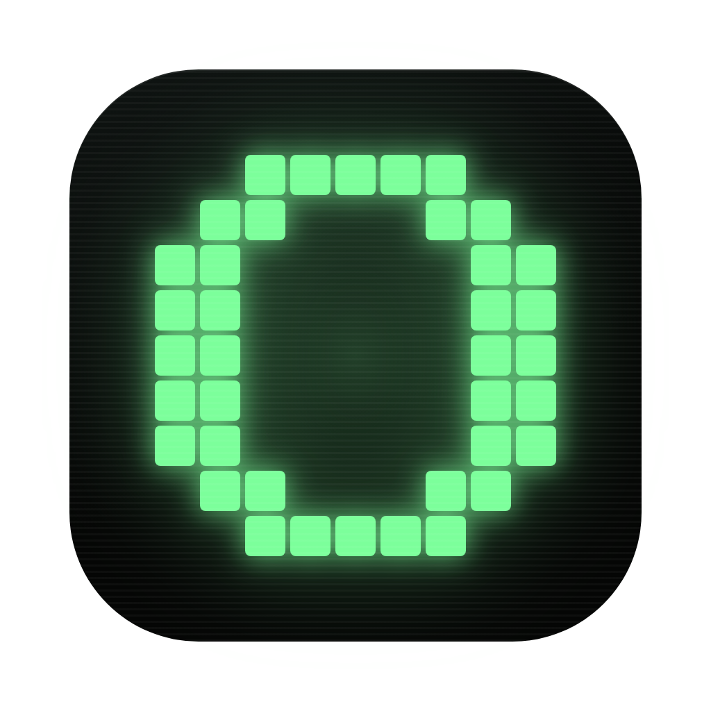

连接客户端
未连接在 iimos 里说「连接浏览器插件」,或者在终端运行 iimos hands browser,拿到配对码后填在这里。连上之后,把要给它用的网页共享出去。
共享给对话
任务在 iimos 的对话里说。它只能操作你共享的网页和它自己新开的网页。
操作日志
连接后，这里会显示 Agent 的网页操作与结果。

iimos浏览器连接在 iimos 里说「连接浏览器插件」,或者在终端运行 iimos hands browser,拿到配对码后填在这里。连上之后,把要给它用的网页共享出去。
任务在 iimos 的对话里说。它只能操作你共享的网页和它自己新开的网页。
连接后，这里会显示 Agent 的网页操作与结果。